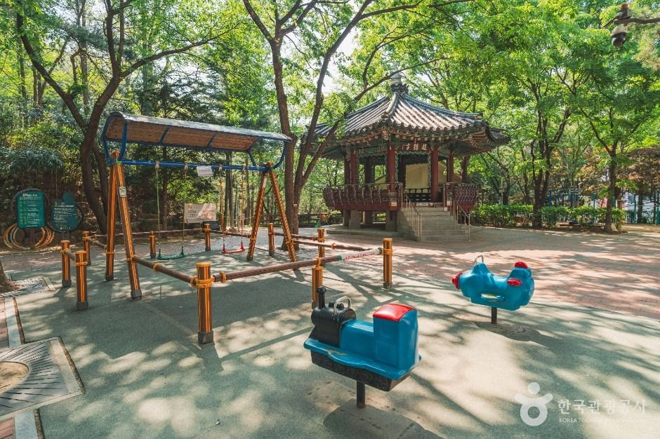
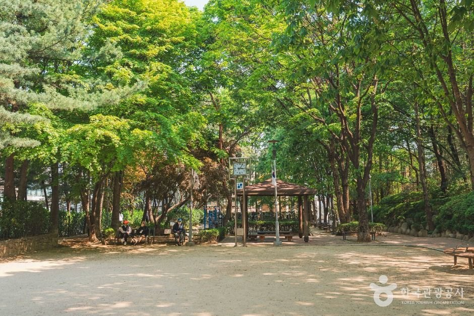
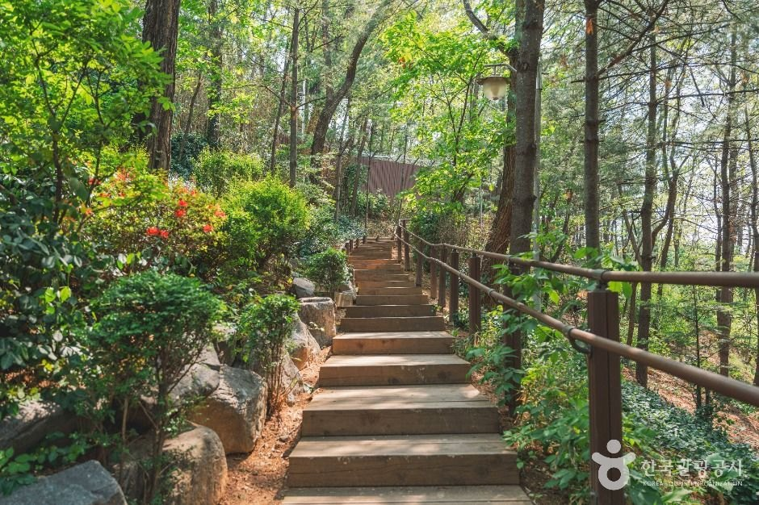
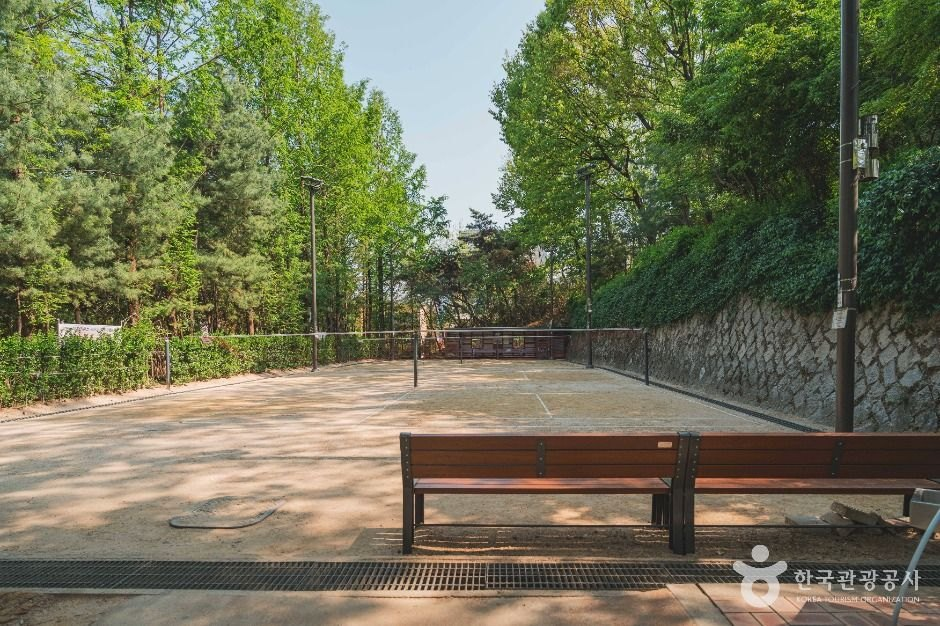

Seoul Hakdong Park Guide: Overview
This Seoul Hakdong Park guide is for travellers staying around Sinsa, Garosu-gil or Gangnam who want twenty minutes of trees between cafés and shopping. Hakdong Neighborhood Park (학동근린공원) is a small, free, always-open park in Nonhyeon-dong, Gangnam-gu, close to Sinsa Station.
It is not a sight you cross the city for. It is the kind of neighbourhood green space Seoul locals actually use: shaded walking paths, a traditional pavilion, a badminton court and benches where office workers take a break. If you are already in Sinsa, it is an easy, quiet add-on.

Shaded Walking Paths and Pine Trees
According to Korea Tourism Organization (KTO), the park has well-kept walking paths under dense trees. The KTO photos show packed-earth paths through tall pines, a wooden-railed staircase up a gentle slope and plenty of benches.
The loop is short, so even a slow walk does not take long. Mornings and early evenings are the quietest. In mid-November the leaves are turning, and by winter the evergreen pines keep it green.


The Pavilion, Badminton Court and Facilities
- Pavilion (정자, jeongja): a traditional-style roofed pavilion where you can sit in the shade.
- Badminton court and exercise equipment: used by locals for a quick workout.
- Children's play area: visible in KTO photos next to the pavilion.
- Drinking fountains and restrooms: listed by KTO.
- Dust-blower station: an air gun for brushing dirt off shoes and clothes, shown in KTO photos — a very Korean park detail.


Why It Is Called Hakdong (Crane Village)
KTO explains that this area was once a farming village called Hakdong (학동), because its shape was said to look like a crane (hak, 학). When the park was created in 1992, it took the old village name. Today the name survives in the park and in Hakdong-ro, one of Gangnam's main roads — a small reminder that this dense business district was farmland a few decades ago.
Visitor Information
| Item | Details |
|---|---|
| Name | Hakdong Neighborhood Park (학동근린공원) |
| Address | 26 Nonhyeon-dong, Gangnam-gu, Seoul (서울특별시 강남구 논현동 26) |
| Hours | Always open |
| Closed | Open every day of the year |
| Admission | Free |
| Parking | Not available |
| Facilities | Walking paths, pavilion, exercise equipment, badminton court, drinking fountains, restrooms |
| Created | 1992 |
| Inquiries | Gangnam-gu Office Parks & Greenery Division, 02-3423-6248 |
Sources: Korea Tourism Organization (한국관광공사) destination listing. Photos © Korea Tourism Organization (KOGL Type 1). No AI-generated images. Facilities can change — confirm before you go.
Getting There
Paste 학동근린공원 or 서울특별시 강남구 논현동 26 into Naver Map or Kakao Map; they give far better walking routes in Korea than Google Maps. KTO places it near Sinsa Station (Line 3 and Sinbundang Line). We do not quote a station exit because the official listing does not give one — let the map app pick the closest exit. There is no parking, so come on foot or by taxi.
Tips for Your Visit
- Pair it with Garosu-gil. Shop and café-hop in Sinsa-dong, then take a quiet walk here.
- Go early or after work hours for the calmest paths.
- Wear proper shoes — some paths are packed earth with a short staircase.
- Bring a light layer in November; it is cooler under the trees.
- Pets: KTO does not list a pet policy, so call 02-3423-6248 if you plan to bring a dog.
How It Compares with Other Seoul Green Walks
| Hakdong Park (Gangnam) | Seoul Forest (Seongdong) | Gyenam Park (Yangcheon) | |
|---|---|---|---|
| Size | Small neighbourhood park | Large city park | Hill forest loop |
| Best for | A short break near Sinsa and Garosu-gil | Picnics and long walks | A 4 km forest loop |
| Hours | Always open | Open daily | Always open |
| Parking | None | Paid lots | None |
Who It Suits
- Great for: Travellers staying in Sinsa, Nonhyeon or Gangnam who want a free green break.
- Great for: Business travellers with an hour between meetings.
- Great for: Families who need a playground stop.
- Less ideal: Visitors looking for a big landmark park — go to Seoul Forest or Olympic Park instead.
Plan Your Seoul Trip
Seoul Hakdong Park FAQ
Where is Hakdong Park?
26 Nonhyeon-dong, Gangnam-gu, Seoul (서울특별시 강남구 논현동 26), near Sinsa Station. Search 학동근린공원 in Naver Map or Kakao Map for walking directions.
Is it free and when is it open?
Korea Tourism Organization lists it as always open, every day of the year, with free admission.
Is there parking?
No. KTO lists parking as not available, so walk from Sinsa Station or take a taxi.
Are there restrooms and water?
Yes. KTO lists restrooms, drinking fountains, exercise equipment and a badminton court in the park.
Who do I contact with questions?
Gangnam-gu Office Parks and Greenery Division, 02-3423-6248 (as listed by KTO).